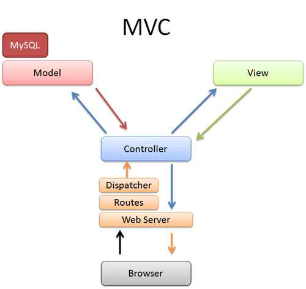

01. Ruby. Rack. MVC. Динамично генериране на HTML
Няколко неща
- напомняме за домашно 1
- срокът е до събота вечер
Vox populi, vox Dei

- очаквайте анкета
- с удобни за нас часове
- изберете удобните и за вас
- ще изберем оптималното решение
Flashback
- За курса
- HTTP
- HTML
Flashback
HTTP
- Hypertext Transfer Protocol
- Stateless (не пази състояние)
- Комуникация между разпределени системи (distributed systems)
- Основите на съвременния уеб
- Request/Response
- URLs
- Verbs/Methods - GET, POST, UPDATE, DELETE
Flashback
HTML
- HyperText Markup Language
- Implemented by the browser
- Основата на всяка уеб страница
- Задава структура
Flashback
HTML pt. 2
<!DOCTYPE html>
<html>
<head>
<title>My title</title>
</head>
<body>
<h1>My header</h1>
<a href="http://example.com">My Link</a>
</body>
</html>
Flashback
HTML - изграждащи единици
тагове, атрибути, елементи
<tag> - отварящ таг
</tag> - затварящ таг
<tag attribute="value"> - атрибут на таг
<tag attribute="value">tag content</tag> - елемент
Атрибутите дават допълнителна информация за HTML елементите.
Flashback
HTML - структура
<!DOCTYPE html> - Декларира HTML версията на документа (в случая HTML 5)
<head> - Съдържа заглавие, скриптове, стилове, мета информация и други.
<title> - Заглавие на страницата. Съдържа се в <head>.
<body> - Дефинира съдържанието на документа.
Днес
- Ruby
- Rack
- MVC
- ERB
Ruby
- Програмите в Ruby са текстови файлове
- Няма компилация като в C или Java
- Скриптов език
- Изпълняват се в терминал/конзола/command prompt с
ruby име_на_файл
Малко ресурси
за любознателните
Ruby
Здравей свят
puts "Hello world"
puts "The answer of life is ", 6 * 7
Изпълнява се с `ruby hello.rb`
Конзола
- Мястото където ще стартираме програмите
- И някои други неща
- Използваем Windows terminal тук
irb
интерактивна конзола
irb– Interactive Ruby- REPL — Read-Eval-Print Loop
- Тук ще прекарваме доста време - и ние, и вие
- Стартирате я с
irb(трябва да ви е в "пътя") - Самото irb е конзола в конзолата
- Излизате в конзолата с
exitили сCtrl + D(под UNIX)
irb
интерактивна конзола
$ irb >> 6 * 9 54 >> "Ruby! " * 4 "Ruby! Ruby! Ruby! Ruby!" >> -10.abs 10
Ruby
всичко е обект
Всичко в ruby обект!
3.class #=> Fixnum
3.to_s #=> "3"
Ruby
базова аритметика
1 + 1 #=> 2
8 - 1 #=> 7
10 * 2 #=> 20
35 / 5 #=> 7
2**5 #=> 32
Ruby
... и понеже всичко е обект
Аритметиката е просто syntax sugar за извикване на метод на обект.
1.+(3) #=> 4
10.* 5 #=> 50
Ruby
както вече споменахме...
Дори и специалните стойности са обекти.
nil # Nothing to see here
true # truth
false # falsehood
nil.class #=> NilClass
true.class #=> TrueClass
false.class #=> FalseClass
Ruby
равенство
1 == 1 #=> true
2 == 1 #=> false
1 != 1 #=> false
2 != 1 #=> true
Всъщност в ruby има 4 равенства.
Ruby
къде е истината
Точно две неща в ruby се оценяват на лъжа:
nilfalse
!nil #=> true
!false #=> true
!0 #=> false
Ruby
сравнения
1 < 10 #=> true
1 > 10 #=> false
2 <= 2 #=> true
2 >= 2 #=> true
Ruby
логически оператори
true && false #=> false
true || false #=> true
!true #=> false
Ruby
стринговете като... обекти
'I am a string'.class #=> String
"I am a string too".class #=> String
placeholder = 'use string interpolation'
"I can #{placeholder} when using double quoted strings"
Ruby
променливи
x = 25 #=> 25
x #=> 25
Забележете, че присвояването връща стойността. Следователно:
x = y = 10 #=> 10
x #=> 10
y #=> 10
Ruby
именуване
- имената се изписват в
snake_case - трябва да бъдат дескриптивни
snake_case = true
path_to_project_root = '/good/name/'
path = '/bad/name/'
Ruby
символи
- immutable, reusable constants
- вътрешно се представят чрез целочислена стойност
- използват се вместо стрингове с цел ефективност
- например ключове на хеш таблици
:pending.class #=> Symbol
status = :pending
status == :pending #=> true
status == 'pending' #=> false
status == :approved #=> false
Ruby
масиви
Масивите в ruby са хетерогенни!
[1, 'hello', false] #=> [1, "hello", false]
array[0] #=> 1
array[12] #=> nil
И понеже са обекти...
array.[] 0 #=> 1
array.[] 12 #=> nil
Ruby
...още масиви
# From the end
array[-1] #=> 5
# With a start index and length
array[2, 3] #=> [3, 4, 5]
# Reverse an Array
a=[1,2,3]
a.reverse! #=> [3,2,1]
# Or with a range
array[1..3] #=> [2, 3, 4]
# Add to an array like this
array << 6 #=> [1, 2, 3, 4, 5, 6]
# Or like this
array.push(6) #=> [1, 2, 3, 4, 5, 6]
# Check if an item exists in an array
array.include?(1) #=> true
Ruby
хешове 1/3
Хешовете са:
- речници
- хеш таблици
- асоциативни масиви
- ...както там го наричате
Ruby
хешове 2/3
hash = { 'color' => 'green', 'number' => 5 }
hash.keys #=> ['color', 'number']
# Hashes can be quickly looked up by key:
hash['color'] #=> 'green'
hash['number'] #=> 5
# Asking a hash for a key that doesn't exist returns nil:
hash['nothing here'] #=> nil
Ruby
хешове 3/3
След версия 1.9 има syntax sugar за символни ключове:
new_hash = { defcon: 3, action: true }
new_hash.keys #=> [:defcon, :action]
# Check existence of keys and values in hash
new_hash.has_key?(:defcon) #=> true
new_hash.has_value?(3) #=> true
Ruby
if-else
if true
'if statement'
elsif false
'else if, optional'
else
'else, also optional'
end
Ruby
for
- В ruby има
for - Не го ползвайте
- НИКОГА!!!
- !!!1!!1!
- Курсът по ruby е под наслов
- 'Всеки
forпирон в ковчега на добрата оценка.'
Ruby
вместо това
`each`
- обхожда дадена колекция по елементите ѝ
- подобно на
foreach,for (T elem : collection)в Java - схванахте идеята
(1..5).each do |counter|
puts "iteration #{counter}"
end
#=> iteration 1
#=> iteration 2
#=> iteration 3
#=> iteration 4
#=> iteration 5
Ruby
each
(1..5).each { |counter| puts "iteration #{counter}" }
# arrays
array.each do |element|
puts "#{element} is part of the array"
end
# hashes
hash.each do |key, value|
puts "#{key} is #{value}"
end
Ruby
map, reduce
Учили сте ги по функционално!
`map`, `reduce`, `inject`
array = [1,2,3,4,5]
doubled = array.map do |element|
element * 2
end
puts doubled
#=> [2,4,6,8,10]
puts array
#=> [1,2,3,4,5]
Ruby
функции 1/2
- дефинират се с
def - няма нужда да се ползва
return - връщат последния оценен израз
- при извикване скобите могат да се изпускат
- аргументите се разделят със запетая
def double(x)
x * 2
end
# Functions (and all blocks) implicitly return the value of the last statement
double(2) #=> 4
# Parentheses are optional where the result is unambiguous
double 3 #=> 6
double double 3 #=> 12
Ruby
функции 2/2
def sum(x, y)
x + y
end
# Method arguments are separated by a comma
sum 3, 4 #=> 7
sum sum(3, 4), 5 #=> 12
Ruby
класове
- дефинират се с ключовата дума
class - конструктур е метода
initialize
class Human
def initialize
end
end
Ruby
променливи
- променливите в ruby се определят от префикса
$var- глобална променлива@var- инстанционна променлива@@var- класова (статична) променливаVar- константа- може да проверим от какъв тип е дадена променлива с
defined?
# Variables that start with $ have global scope
$var = "I'm a global var"
defined? $var #=> "global-variable"
# Variables that start with @ have instance scope
@var = "I'm an instance var"
defined? @var #=> "instance-variable"
# Variables that start with @@ have class scope
@@var = "I'm a class var"
defined? @@var #=> "class variable"
# Variables that start with a capital letter are constants
Var = "I'm a constant"
defined? Var #=> "constant"
Ruby
класове
# Define a class with the class keyword
class Human
# A class variable. It is shared by all instances of this class.
@@species = 'H. sapiens'
# Basic initializer
def initialize(name, age = 0)
# Assign the argument to the "name" instance variable for the instance
@name = name
# If no age given, we will fall back to the default in the arguments list.
@age = age
end
# Basic setter method
def name=(name)
@name = name
end
# Basic getter method
def name
@name
end
end
Ruby
гетъри и сетъри
- в ruby гетъри и сетъри могат да се генерират автоматично
attr_reader :variable- генерира гетър за@variableattr_reader :variable- генерира сетър за@variableattr_accessor :variable- генерира гетър и сетър
attr_accessor :name
# Getter/setter methods can also be created individually like this
attr_reader :name
attr_writer :name
class Human
attr_accessor :name, :age
@@species = 'H. sapiens'
def initialize(name, age = 0)
@name = name
@age = age
end
end
Ruby
класови методи
- Слагаме
self.преди името на метода. - Класови е синоним на статични за класа.
- Следователно могат да се викат и без конкретна инстанция.
def self.say(msg)
puts msg
end
Ruby
класове
class Human
attr_accessor :name, :age
@@species = 'H. sapiens'
def initialize(name, age = 0)
@name = name
@age = age
end
def self.say(msg)
puts msg
end
def species
@@species
end
end
Ruby
малко примери
# Instantiate a class
jim = Human.new('Jim Halpert')
dwight = Human.new('Dwight K. Schrute')
# Let's call a couple of methods
jim.species #=> "H. sapiens"
jim.name #=> "Jim Halpert"
jim.name = "Jim Halpert II" #=> "Jim Halpert II"
jim.name #=> "Jim Halpert II"
dwight.species #=> "H. sapiens"
dwight.name #=> "Dwight K. Schrute"
# Call the class method
Human.say('Hi') #=> "Hi"
MVC
що е то?
- Model-view-controller
- design (architectural) pattern за потребителски интерфейс
- разделя приложението ни на 3 независими части
- тяхната роля е да разграничат начина, по който се съхранява и обработва информацията
- ...от начина, по който се показва на потребителя
- започнала като архитектура за десктоп приложения
- днес е изключително популярна във веба
- Всеки уважаващ себе си фреймвърк за уеб приложения я използва
MVC
overview
Практика
- По време на упражненията ще направим Twitter clone
- Няма да покрива цялата функционалност на Twitter
- Паралелно ще направим и базов MVC framework
Twitter clone
Началото...
- Почваме още днес
- Baby steps
- 3 страници: профилна, followers, following
- 1 controller:
UserController - 3 view-та:
show.html.erb,followers.html.erb,following.html.erb .erb? Embedded Ruby. Така ще правим template-и.- No routers today ;(
Twitter clone
Файлова структура
.
|- views
|- controllers
|- models
Моделиране
на потребители (част 1)
- Models?
- Намират се в директорията
models - Псевдоним, email, местоположение, имена, цяло име
- Нищо особено на този етап
Моделиране
на потребители (кодът)
class User
attr_accessor :username, :email, :first_name, :last_name, :location
def initialize(username, email, first_name, last_name, location)
@username = username
@email = email
@first_name = first_name
@last_name = last_name
@location = location
end
def full_name
"#{first_name} #{last_name}"
end
end
Контролиране
или по-скоро изпълняване на желания (част 1)
- Controllers?
- Намират се в директорията 'controllers'
- Всеки request се map-ва към controller и действие (
Controller#method) - Трябват ни действия за показване на профил, followers и following
UserController#show,UserController#followers,UserController#following- Игнорирайте метода
renderна този етап (намира се на следващия слайд) - Нищо особено на този етап
Контролиране
или по-скоро изпълняване на желания (кодът)
require 'erb'
require 'sample_users'
class UserController
def show
@user = USERS[params[:id]]
render :show
end
def followers
@followers = []
render :followers
end
def following
@following = []
render :following
end
private
def params
{id: 1}
end
def render(view_path)
ERB.new("views/#{view_path}.html.erb").result(binding)
end
end
Примерни данни
require 'sample_users', anyone?- Временно, докато не стигнем БД
USERS = {
1 => User.new('foo', 'foo@example.com', 'Foo', 'Yeah', 'Fooland'),
2 => User.new('bar', 'bar@example.com', 'Bar', 'Yeah', 'Barland'),
3 => User.new('larodi', 'larodi@example.com', 'Larodi', 'The Great', 'Larodiland'),
4 => User.new('lorem', 'lorem@example.com', 'Lorem', 'Text', 'Loremland'),
5 => User.new('ipsum', 'ipsum@example.com', 'Ipsum', 'Text', 'Ipsumland'),
6 => User.new('xyz', 'xyz@example.com', 'Xyz', 'abc', 'Xyzland'),
}
USER_FOLLOWERS = {
1 => [2, 3, 5],
}
USER_FOLLOWING = {
1 => [2, 4, 5, 6]
}
Router
Маршрутизатор
- Следващия път
users/42->UsersController#showusers/42/followers->UsersController#followersusers/42/following->UsersController#following- Подават се и параметрите:
params: {id: 42}
Представяне
на данните, ама красиво
- Views?
- Обвиват данните, така че да бъдат представяни
- Обвивката може да бъде
html,json,xml, и тн - Днес ни интересува
html - Шаблони, в които се изпълнява Ruby код
- Embedded Ruby
Embedded Ruby
ERB
- DEMO
Методът render
...черна магия
- Подаваме на
ERBшаблон, съдържащ html и ruby код ERBизпълнява ruby код-а и генерира чист html- Какъв е тоя
binding?
class UserController
...
def render(view_path)
ERB.new("views/#{view_path}.html.erb").result(binding)
end
end
Представяне
на данните, ама красиво (кодът)
Вие сте!
Домашното
Soon!